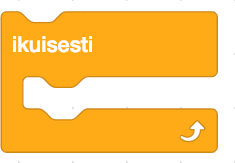
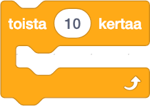

Silmukka
Ohjelmoinnissa silmukoita voidaan käyttää toistamaan samoja lauseita tai koodilohkoa monta kertaan. Scratchissä on monia erilaisia mahdollisuuksia luoda silmukoita. Koodipalikat, jotka alkavat sanalla "ikuisesti" tai "toista" ovat silmukoita.
Esimerkkejä silmukoista Scratchissä
Tämä Ohjaus-palikoiden palikka toistaa sisällään olevia koodipalikoita ikuisesti.
Tämä Ohjaus-palikoiden palikka toistaa sisällään olevia koodipalikoita 10 kertaa.
